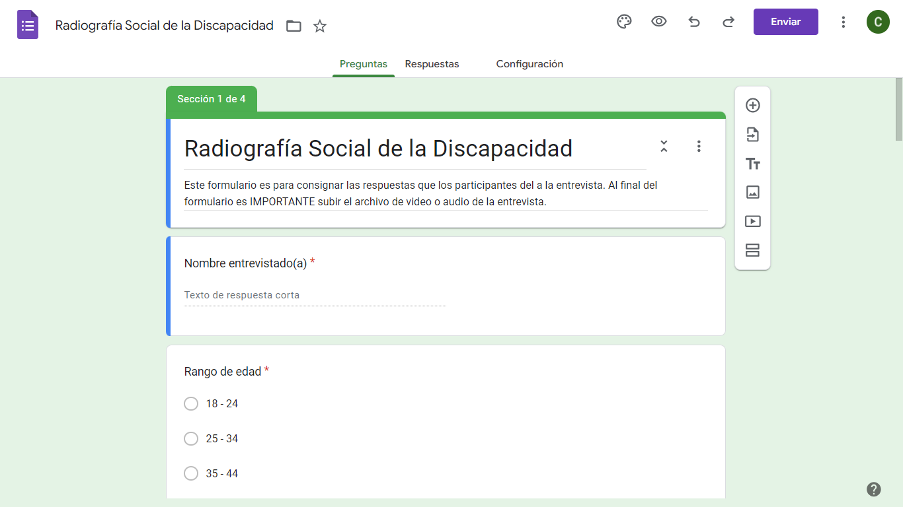

Entrevista base

Las preguntas de la entrevista fueron provistas por la docente de la asignatura. Esta entrevista se compone de dos dimensiones: Información y Actitud
Utilizando la herramienta de Google Forms creamos un formulario para la aplicación de la entrevista
En la siguiente imagen se puede observar el encabezado del formulario. Para verlo completo se puede hacer clic aquí
Entrevistados
Entrevistado 1
- Nombre: Jorge Acosta
- Edad: 35 años
- Ocupación: Docente
Entrevistado 2
- Nombre: Leandro Guarín
- Edad: 27 años
- Ocupación: Enfermero
Entrevistado 3
- Nombre: Sebastían Vargas
- Edad: 30 años
- Ocupación: Profesional en Educación Física
Entrevistado 4
- Nombre: Juan Farfán
- Edad: 35 años
- Ocupación: Profesional en artes escénicas
Entrevistado 5
- Nombre: Erick Rodas
- Edad: 27 años
- Ocupación: Familiar
Entrevistas
A continuación, los audios/video de las entrevistas realizadas
- Auto-entrevista Cecilia Ávila
- Auto-entrevista Lina Vargas
- Auto-entrevista Jonathan Beltrán
- Auto-entrevista Katherin González
- Auto-entrevista Gabriela Rodas
- Entrevista Jorge Acosta
- Entrevista Leandro Guarín
- Entrevista Juan Farfán
- Entrevista Erick Rodas
- Entrevista Sebastían Vargas